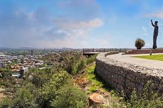
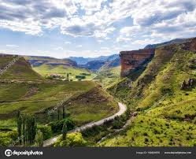
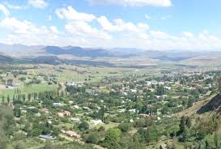
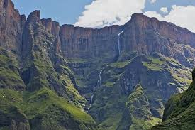

Free State is a province of South Africa, Bloemfontein is it's capital. It's historical origins lie in the Boer republic called Orange Free State
The following images are places you can explore in Free State
   1.Bloemfontein-Free State National Botanical Gardens(Haven for native plants & wildlife), Oliewenhuis Art museum(Mansion & gardens showcasing fine art), National museum Bloemfontein(museum of art,culture & natural history), Anglo Boer war museum(museum).
2.Golden Gate Highlands National Park-Basotho cultural village, Glen Reenen(chalets,parks,camping and hiking), Highlands mountain Retreat, Holkrans Hiking Trail(Hiking).
3.Clarens-Blou Donki Gallery(Art museum & Art), Addy & Hoyle Art Gallery, Clarens Kloof dam, Clarens guide.
4.Royal Natal National Park-Tugela falls(waterfall,amphitheatre and hiking), Ampitheatre(vast cliffs with distinctive shape), All out Adventure, Sentinel peak.
1.Bloemfontein Rose Festival
2.Free State Fashion week
3.Free State Wine show
4.Macufe Festival